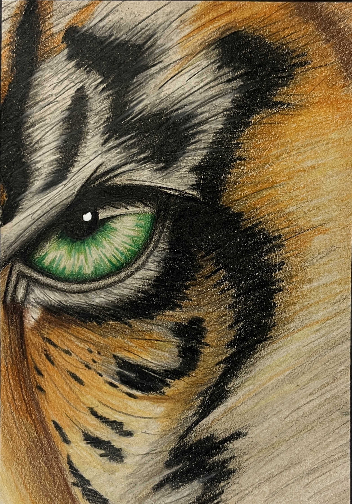
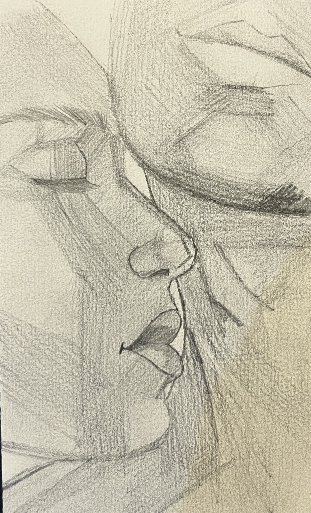
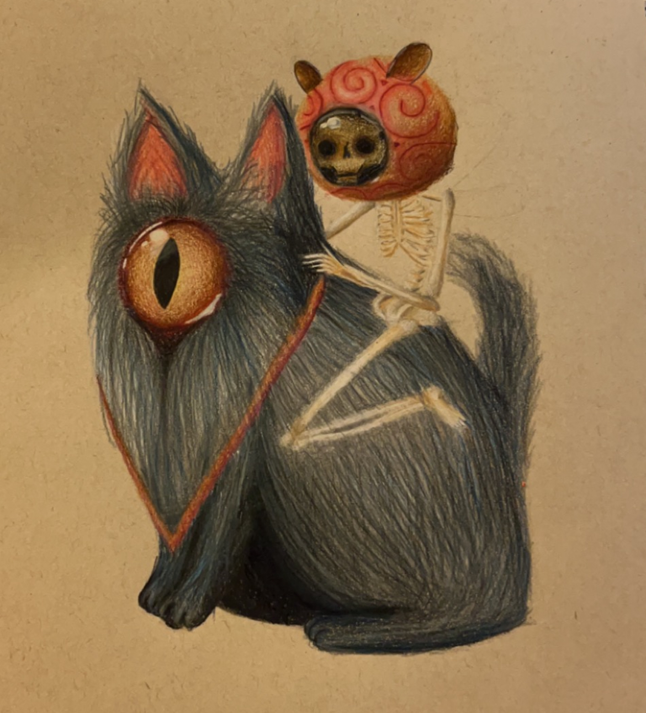

Hi, my name is Andrew Oneill, and I'm a part-time bartender, studying Computer Forensics and Security at SETU Waterford. My interest in computers first started when my dad started working with Dell Technologies at an early stage in my childhood. I'm passionate about many things, including Art, Games, Photography, and Videography.
  Throughout my life, I've gathered a wide and ever-expanding range of skills, with some coming faster than others. For example, my transition with art from 2019-2020 was drastic. I quickly leanred how to properly layer colours with both paint, and colouring pencils. Three of my favourite drawings can be seen in the center of this page. As mentioned on my Home page, the first drawing I have ever sold can be seen here aswell (Right).